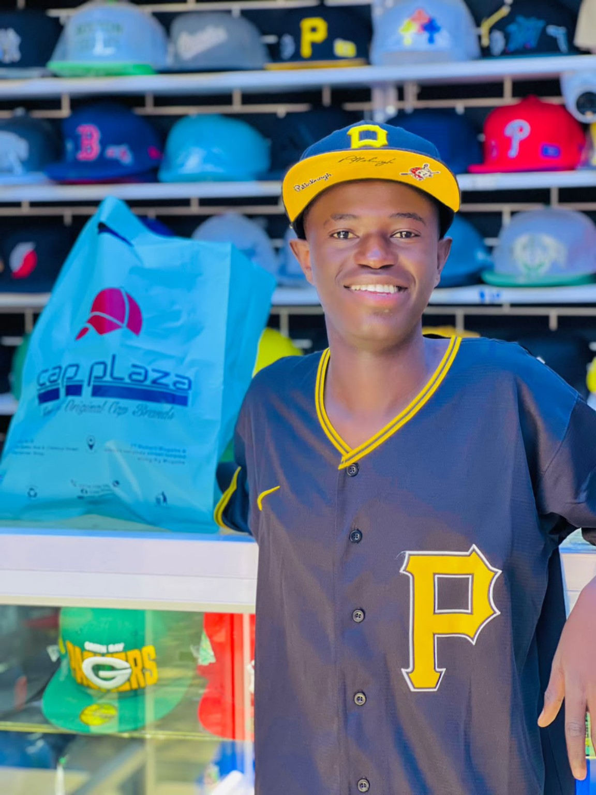
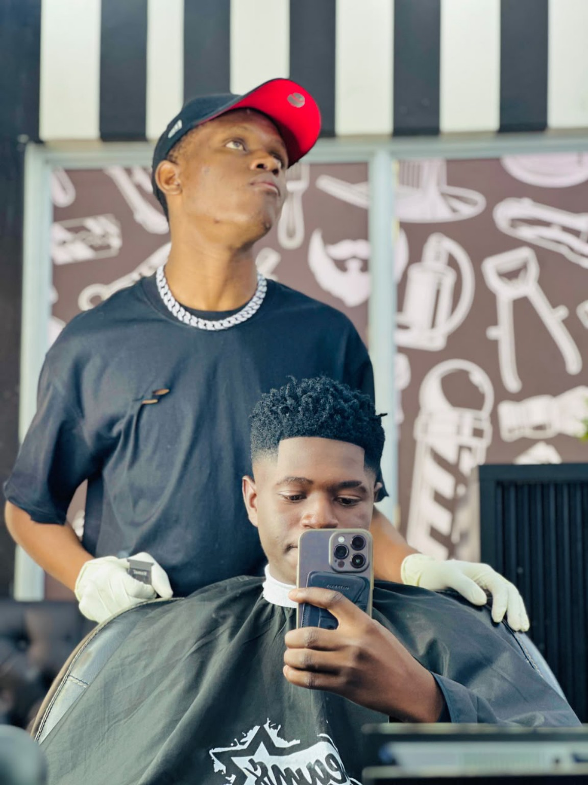
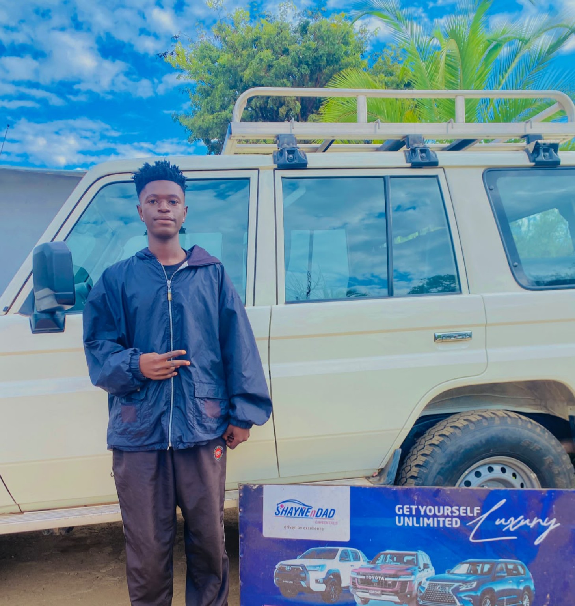

Tawananyasha Katsande is the Zimbabwean comedian and digital creator behind Jah Blex Comedy. Through the character and public identity Head Boy Wekubhawa, he has developed a style centred on everyday Zimbabwean experiences, local speech and the humour found in ordinary social situations.
His skits move through relationships, work, neighbourhood life, friendships, customers, service providers and the misunderstandings people recognise from daily life. Shona dialogue and familiar settings give the comedy a distinctly Zimbabwean voice, while his delivery keeps the material direct, accessible and suited to short-form social media.
Jah Blex has built his comedy around the people, conversations and situations that Zimbabwean audiences already know.

The comedy of Head Boy Wekubhawa
Jah Blex’s comedy is driven by observation. His characters and situations often come from the same places his audience does: garages, shops, homes, neighbourhoods, workplaces and social gatherings. A mechanic dealing with a customer, a friend stretching the truth or an awkward conversation can become the centre of a skit.
The Head Boy Wekubhawa identity gives the work a recognisable voice across his platforms. Public posts carry tags such as #ZimComedy, #Zimbabwean, #skits and #viralvideos, reflecting his focus on Zimbabwean short-form comedy made for online audiences.8

His humour draws its energy from Zimbabwean speech, behaviour and everyday life.
From comedy skits to brand campaigns
Alongside his entertainment work, Katsande works as a brand advisor, influencer and ambassador. He brings products and services into the same comedy format his audience already follows, using characters, dialogue and everyday situations to turn advertising into content people can watch and share.
His public footprint shows collaborations and promotional content involving MDS Fuel Injection Specialists, Victor Driving School, Bright Future Solar Zimbabwe and ZimSweet Potato.4567 His Instagram profile also publicly identifies him as a comedian and brand ambassador associated with MDS Fuel Injection Specialists.1
MDS Fuel Injection Specialists
Comedy-led promotional content and publicly stated brand-ambassador association.
View example ↗ 02Victor Driving School
Branded skit content connecting learner-driver services with an entertainment audience.
View example ↗ 03Bright Future Solar Zimbabwe
A promotional comedy post built around power banks and solar-energy products.
View example ↗ 04ZimSweet Potato
A comedy collaboration created for a Zimbabwean consumer brand.
View example ↗
Comedy, acting and public appearances
Jah Blex’s work extends beyond recorded skits. His public profile includes acting, entertainment, MC work, music and brand influence, placing him across digital comedy, live events and promotional campaigns.123
He has appeared at business activations, creative-industry gatherings, fashion spaces, sports environments and red-carpet events. These appearances form part of a career that combines performance with direct audience engagement and commercial collaboration.
A Zimbabwean voice in digital entertainment
Across Facebook, Instagram and YouTube, Jah Blex has built a catalogue that brings together comedy skits, acting, promotional videos and public appearances. His work is grounded in Zimbabwean language and social life, but it also serves businesses looking for a more human and entertaining way to reach audiences.
The name Head Boy Wekubhawa has become the central identity connecting these different parts of his career. It carries his humour, his public personality and his work with brands across each platform.
Through Jah Blex Comedy, Tawananyasha Katsande has created a public body of work built on local humour, recognisable characters and a growing record of brand collaboration.